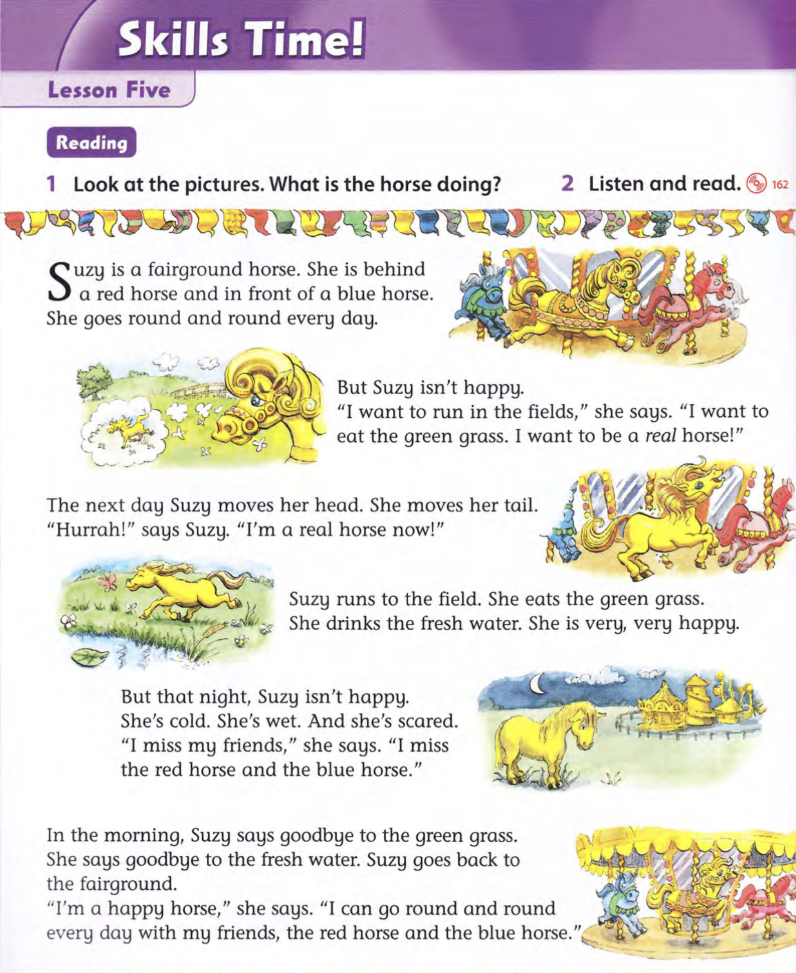

Family & Friends 2 - Unit 15 - Lesson 5
Nghe - Đọc - Dịch
Sẵn sàng
Hướng dẫn trả bài
- Bấm Nghe để luyện đọc theo từng từ màu vàng.
- Nghe nhiều lần để luyện phát âm đúng, ngữ điệu biểu cảm.
- Khi trả bài, con có thể quay màn hình và đọc theo.
- Sau đó, con dịch bài sang Tiếng Việt - Dịch sát nghĩa - tốc độ đủ nhanh.

Từ mới cần nhớ
Con xem nghĩa của từ và cấu trúc để hiểu bài. Khi trả bài, con tự dịch bài bằng Tiếng Việt.
- Suzy - tên chú ngựa trong câu chuyện.
- fairground - khu vui chơi, hội chợ.
- horse - con ngựa.
- fairground horse - ngựa ở vòng quay trong khu vui chơi.
- red - màu đỏ.
- blue - màu xanh dương.
- red horse / blue horse - ngựa đỏ / ngựa xanh.
- behind - ở phía sau.
- front - phía trước.
- in front of - ở phía trước ai/cái gì.
- behind A and in front of B - ở sau A và ở trước B.
- go / goes - đi / đi (với chủ ngữ số ít).
- round - vòng quanh, tròn.
- round and round - vòng đi vòng lại.
- every - mọi, mỗi.
- day - ngày.
- every day - mỗi ngày, hằng ngày.
- happy - vui, hạnh phúc.
- be happy - vui, hạnh phúc.
- isn't happy - không vui.
- want - muốn.
- want to - muốn làm gì.
- run - chạy.
- field / fields - cánh đồng / những cánh đồng.
- run in the fields - chạy trên những cánh đồng.
- say / says - nói / nói (với chủ ngữ số ít).
- eat / eats - ăn / ăn (với chủ ngữ số ít).
- green - màu xanh lá cây.
- grass - cỏ.
- green grass - cỏ xanh.
- eat the green grass - ăn cỏ xanh.
- real - thật, thực sự tồn tại.
- a real horse - một con ngựa thật.
- be a real horse - là/trở thành một con ngựa thật.
- next - tiếp theo, kế tiếp.
- the next day - ngày hôm sau.
- move / moves - di chuyển / di chuyển (với chủ ngữ số ít).
- head - cái đầu.
- tail - cái đuôi.
- move her head / tail - cử động đầu / đuôi của cô ấy.
- Hurrah! - Hoan hô!; tiếng reo vui.
- now - bây giờ.
- a real horse now - bây giờ là một con ngựa thật.
- run / runs to - chạy đến.
- the field - cánh đồng đã được nhắc đến.
- drink / drinks - uống / uống (với chủ ngữ số ít).
- fresh - tươi, trong lành, sạch mát.
- water - nước.
- fresh water - nước sạch, nước trong lành.
- drink the fresh water - uống nước sạch.
- very - rất.
- very, very - rất, rất; nhấn mạnh mức độ.
- very happy - rất vui.
- night - đêm, buổi tối.
- that night - đêm hôm đó.
- cold - lạnh.
- wet - ướt.
- scared - sợ hãi.
- be scared - cảm thấy sợ.
- miss - nhớ ai/cái gì vì đang xa cách.
- friend / friends - người bạn / những người bạn.
- miss my friends - nhớ những người bạn của tôi.
- morning - buổi sáng.
- in the morning - vào buổi sáng.
- goodbye - lời chào tạm biệt.
- say goodbye - nói lời tạm biệt.
- say goodbye to - tạm biệt ai/cái gì.
- back - trở lại, về lại.
- go back - quay lại, trở về.
- go back to - quay trở lại nơi nào.
- can - có thể.
- can + động từ nguyên mẫu - có thể làm gì.
- with - với, cùng với.
- with my friends - cùng những người bạn của tôi.
- look - nhìn.
- picture / pictures - bức tranh / những bức tranh.
- do / doing - làm / đang làm.
- listen - nghe.
- read - đọc.
- listen and read - nghe và đọc.
- she - cô ấy; đại từ chủ ngữ.
- her - của cô ấy; tính từ sở hữu trong bài.
- I - tôi, mình; đại từ chủ ngữ.
- my - của tôi; tính từ sở hữu.
- and - và.
- but - nhưng.
- a / an - một; dùng trước danh từ số ít chưa xác định.
- the - người/vật đã xác định hoặc đã được nhắc đến.
- in - trong, ở trong.
- of - của, về.
- to - đến; hoặc đứng trước động từ nguyên mẫu.
- is - là, ở; dạng hiện tại của be với chủ ngữ số ít.
- isn't - không phải, không ở; dạng rút gọn của is not.
- I'm - tôi là; dạng rút gọn của I am.
- she's - cô ấy là; dạng rút gọn của she is.
- hiện tại đơn - diễn tả thói quen, sự thật và chuỗi sự việc trong truyện.
- She + is + ... - dùng is với chủ ngữ she.
- She + động từ-s/-es - động từ hiện tại đơn thêm đuôi với chủ ngữ ngôi ba số ít.
- ngôi thứ ba số ít - he, she, it hoặc một người/vật số ít.
- động từ + -s - moves, runs, eats, drinks, says.
- động từ tận cùng bằng -o + -es - go → goes.
- say → says - thêm -s; cách phát âm của gốc từ thay đổi.
- move → moves - bỏ e không; chỉ thêm -s.
- run → runs / eat → eats / drink → drinks - thêm -s.
- chủ ngữ + động từ + tân ngữ - She eats the green grass.
- hiện tại đơn + every day - diễn tả việc lặp lại hằng ngày.
- be + tính từ - miêu tả trạng thái. is happy; is cold; is wet; is scared.
- tính từ + danh từ - tính từ đứng trước danh từ. red horse; green grass; fresh water.
- want to + động từ - muốn làm gì. want to run/eat/be.
- can + động từ nguyên mẫu - sau can, động từ không thêm to hay -s.
- I can go ... - tôi có thể đi ...
- giới từ chỉ vị trí - behind; in front of; in.
- behind + danh từ - ở phía sau ai/cái gì.
- in front of + danh từ - ở phía trước ai/cái gì.
- in the fields / to the field - ở trong các cánh đồng / đến cánh đồng.
- cụm thời gian đầu câu - đặt dấu phẩy sau cụm. In the morning, ...
- the next day - nối tiếp sự việc vào ngày hôm sau.
- that night - chỉ đêm của ngày đang kể.
- every + danh từ số ít - every day, không dùng days.
- very + tính từ - nhấn mạnh tính từ. very happy.
- very, very + tính từ - lặp very để nhấn mạnh hơn.
- move + tính từ sở hữu + bộ phận cơ thể - moves her head; moves her tail.
- miss + người - nhớ ai. I miss my friends.
- say goodbye to + danh từ - tạm biệt ai/cái gì.
- go back to + nơi chốn - quay trở lại nơi nào.
- with + người - cùng với ai. with my friends.
- A and B - nối hai từ/cụm từ cùng vai trò.
- mệnh đề 1, but + mệnh đề 2 - nối hai ý tương phản bằng nhưng.
- round and round - lặp từ để diễn tả chuyển động liên tục.
- lời nói trực tiếp - lời nhân vật được đặt trong dấu ngoặc kép.
- “...,” she says. - lời nói đứng trước, mệnh đề tường thuật đứng sau.
- says Suzy - đảo động từ tường thuật lên trước tên nhân vật.
- dấu phẩy trong lời nói - dùng trước dấu ngoặc kép đóng khi sau đó còn she says.
- dấu chấm than - thể hiện cảm xúc mạnh. Hurrah!
- tính từ sở hữu + danh từ - her head, her tail, my friends.
- danh từ số nhiều + -s - horses, fields, friends, pictures.
- a + danh từ số ít - a fairground horse; a red horse; a real horse.
- the + danh từ đã biết - the field, the grass, the water, the fairground.
- Look at the pictures. - Hãy nhìn vào các bức tranh.
- What is the horse doing? - Con ngựa đang làm gì?
- What + is + chủ ngữ + doing? - hỏi một người/vật đang làm gì.
- am / is / are + động từ-ing - hiện tại tiếp diễn, diễn tả hành động đang xảy ra.
- mệnh lệnh: động từ nguyên mẫu - câu yêu cầu. Look; Listen and read.